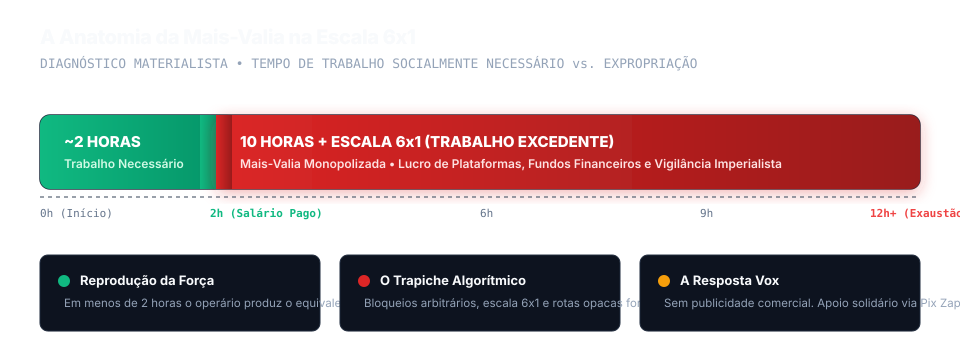
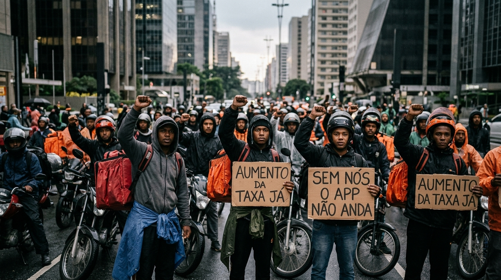
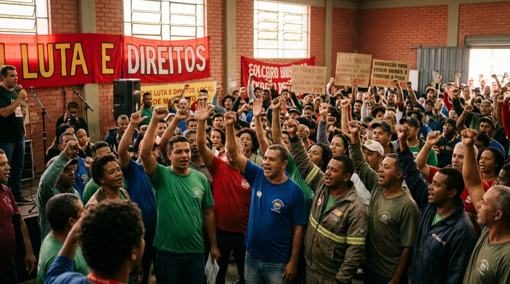
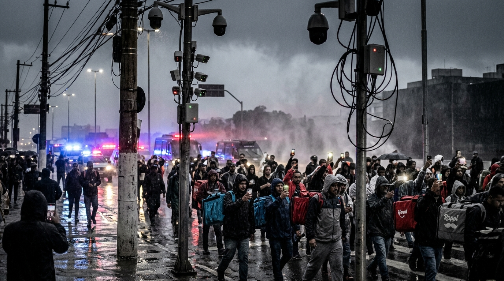
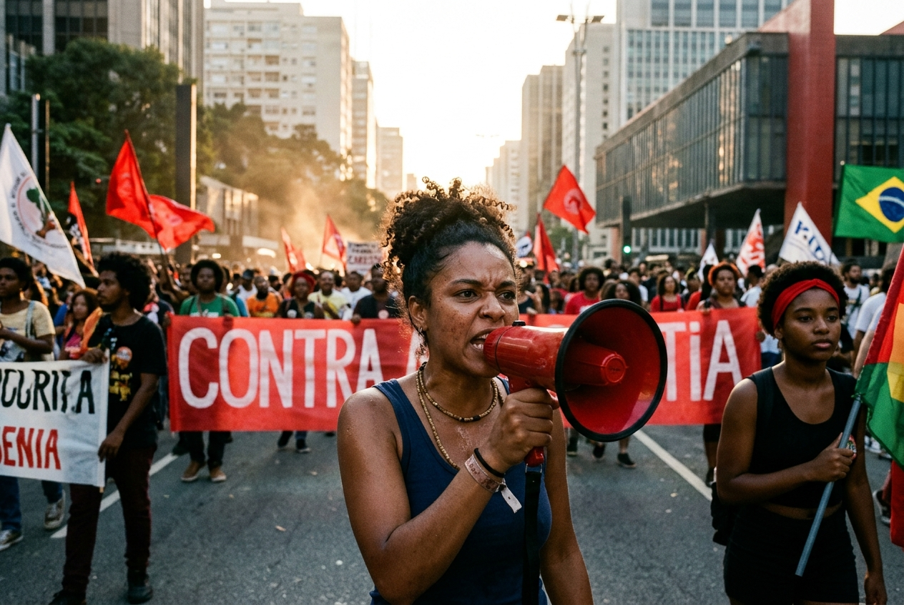
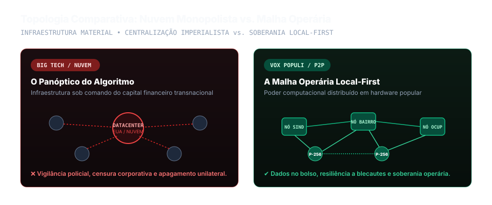
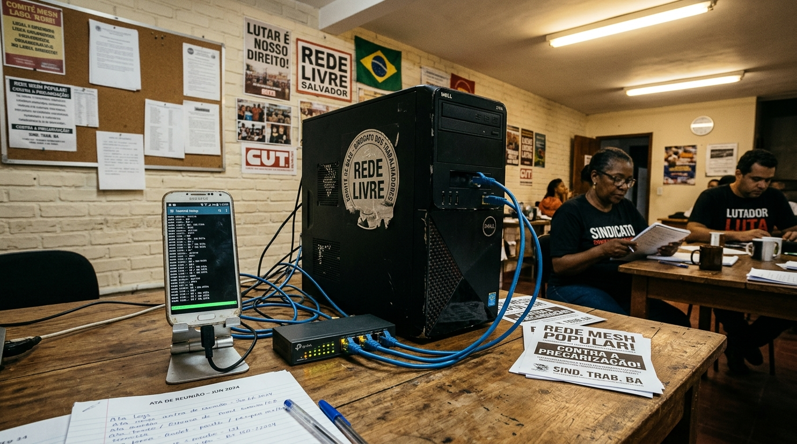

A tecnologia sob o capital monopolista
Forças produtivas não são neutras. As plataformas corporativas operam como aparelhos de extração de mais-valia, vigilância estatal e reprodução do fascismo.
⚡ Mais-Valia Algorítmica
O algoritmo acelera o ritmo de trabalho, fragmenta a jornada em frações descartáveis e drena os lucros para o centro imperialista.
👁️ Vigilância de Classe
Monopólios entregam comunicações, metadados e histórico de militantes diretamente à polícia burguesa em momentos de greve.
🔥 Máquina da Reação
O modelo de negócios vive da indignação. O ódio fascista, o racismo e o pânico moral geram cliques fáceis e dividem a classe.


- Servidores Nuvens monopolistas centralizadas sob vigilância imperialista dos EUA.
- Algoritmo Leilão pago da atenção e impulsionamento sistemático de pânico reacionário.
- Economia Mais-valia parasitária, anúncios abusivos e pedágios sobre doações populares.
- Propriedade Apagamento sumário de contas combativas por decisão corporativa arbitrária.
- Servidores Nós locais (Vox Populi) em PCs reciclados em sindicatos e bairros (Local-First).
- Algoritmo Sem leilão de alcance. Deliberação soberana pela base (1 membro = 1 voto).
- Economia Código livre AGPLv3. Solidariedade direta via Pix Zaps (0% taxa).
- Propriedade Chaves no bolso (Ed25519/P-256), perfis coletivos M-de-N e memória imutável.
A ferramenta é o andaime; o edifício é a organização operária
Recusamos o solucionismo tecnológico: nenhum software faz a revolução no lugar da luta de massas. O Vox existe como andaime de combate para proteger a comunicação operária.

7 trincheiras da luta digital
Princípios marxistas traduzidos em defesas técnicas concretas contra o capital:
Colônia de Dados
O Brasil envia dados brutos e aluga de volta software proprietário que sangra a economia.
Escala 6x1 & Algoritmo
O algoritmo patronal impõe jornadas extenuantes para baratear a reprodução do trabalho.
Vigilância & Repressão
Monopólios colaboram entregando atas e metadados de militantes à repressão policial.
Raça, Gênero & Classe
Plataformas impulsionam linchamentos misóginos e racistas para faturar com o ódio.
Desinformação em Massa
O fascismo alimenta-se do ódio algorítmico e não será derrotado por moderação corporativa.
Bens Comuns (Commons)
A tecnologia deve pertencer à sociedade inteira para satisfazer as necessidades do povo.
Disciplina Operária
A vanguarda necessita de comando inviolável contra infiltrações e cortes de sinal.


Como a infraestrutura funciona na prática
Poder computacional descentralizado operando nas mãos da própria classe trabalhadora:

📱 Chaves no Bolso (Local-First)
Identidades criptográficas (Ed25519/P-256) geradas no aparelho sem custódia corporativa.
🚩 Perfis Coletivos M-de-N
Notas e manifestos assinados coletivamente por delegados eleitos pela base sindical.
🖥️ Nó Popular (Vox Populi)
Cache e relay em PCs antigos de 2012, Raspberry Pi ou celulares velhos em sedes populares.
⚡ Pix Zaps (0% Taxa)
Sustentação direta de caixas de greve via algoritmo EMV offline sem pedágios bancários.
🪶 PWA Ultra-Leve (< 100 KiB)
Interface veloz que roda em celulares baratos com internet pré-paga 3G/4G.
🛡️ Memória Auditável
Registros protegidos por hashes SHA-256. Nenhuma corporação pode apagar nossa história.

Irradiar a verdade operária da retaguarda livre para as massas
Como construir a autonomia técnica
A soberania popular é construída pela práxis diária da classe trabalhadora:
Abra seu Núcleo
Delibere coletivamente no Vox com votação direta (1 membro = 1 voto).
Irradie a Pauta
Use o disparo POSSE para levar o fim do 6x1 a milhares de grupos populares.
Participe da comunidade oficial vox
Debate contínuo entre militantes, desenvolvedores e mantenedores da rede livre.